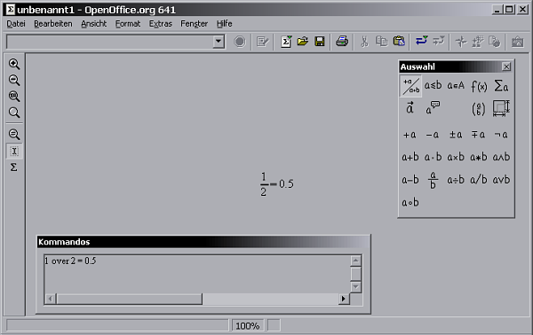
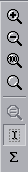
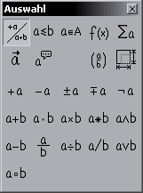
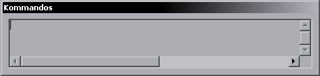

| [zurück] | [Hauptmenü] | [weiter] |
OpenOffice.org Formel
01 - grundlegende Bedienelemente
Hauptfenster

Abb. 1: Hauptansicht
Menü
Abb. 2: Menü
Das Menü enthält alle wichtigen
Funktionen und Einstellungsoptionen. Für die Bedienung des
Formel-Programmes ist es aber nicht so wichtig, die Kommandoeingabe
und das Befehlsauswahlfeld sind weitaus wichtiger.
Funktionsleiste
Abb. 3: Funktionsleiste
Das ist die Funktionsleiste. Wie auch in den anderen OpenOffice.org Programmkomponenten hält auch sie schnell verfügbare Icons für das Öffnen, Speichern und Drucken sowie Ausschneiden, Kopieren und Einfügen zur Verfügung
Werkzeugleiste

Die Werkzeugleiste ist in 2 Bereiche geteilt. Der obere Teil mit den Lupen ist für die Vergrößerung
zuständig. Es lässt sich zwischen vergrößerter
und verkleinerter Ansicht sowie zwischen einer Totalansicht und
einer 1:1 Ansicht wählen.
Der untere Bereich hat das Icon für einen Interaktiven Cursor
(damit findet man im Formel-Code schneller das Gesuchte) aktiviert
und darunter das Sigma-Zeichen ist für das Einfügen von
Sonderzeichen da.
Abb. 4: Funktionsleiste
Kommandoauswahl

Abb. 5: Auswahl des Kommandos
Kommandos

Abb. 6: Kommando Feld
Dieses Feld ist das Wichtigste für das Formel-Programm. Es beinhaltet den strukturellen Informations-Code für das was dargestellt werden soll. Diese erste Einführung beschäftigt sich hauptsächlich damit, wie man was wie darstellen kann
| [zurück] | [Hauptmenü] | [weiter] |
© Copyright 2003, Harald Schilly
This documentation is part of "Erste Schritte: OpenOffice.org Textdokument", which is released
under the terms of the PDL.
For full copyright and license info read the index page.